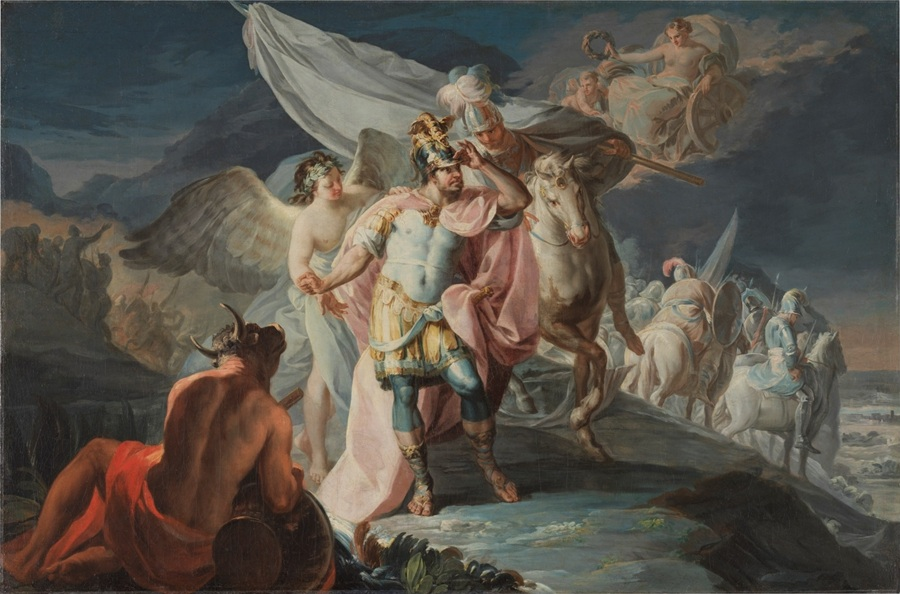

La Traversée des Alpes — La Revanche d'Hannibal

Pourquoi Hannibal traverse les Alpes ?
Après la humiliation de Carthage lors de la première guerre punique, le père d'Hannibal, Hamilcar Barca, jure de se venger de Rome. Avant de mourir, il fait promettre à son jeune fils Hannibal de ne jamais être ami avec Rome. Hannibal grandit avec une seule idée en tête — détruire Rome.
En 218 av. J.-C., Hannibal prend une décision qui stupéfie le monde entier. Au lieu d'attaquer Rome par la mer comme tout le monde s'y attend, il décide de traverser toute l'Europe à pied — en passant par l'Espagne, la Gaule, et les Alpes — pour attaquer Rome par le nord, là où personne ne l'attend.
Source : Wikipedia — Hannibal Barca
La traversée
Hannibal part d'Espagne avec une armée de 90 000 soldats, 12 000 cavaliers et 37 éléphants de guerre. La traversée des Alpes dure environ 15 jours en plein automne, dans le froid, la neige et sur des chemins de montagne étroits et dangereux.
Les pertes sont énormes. Des soldats tombent dans des précipices, meurent de froid ou sont attaqués par des tribus gauloises hostiles. Quand Hannibal arrive en Italie, il ne lui reste plus que 20 000 fantassins, 6 000 cavaliers et quelques éléphants. La moitié de son armée est morte dans les montagnes.
Source : Wikipedia — Traversée des Alpes par Hannibal
L'impact sur Rome
Quand Rome apprend qu'Hannibal est en Italie avec une armée, c'est la panique totale. Personne n'avait imaginé qu'il traverserait les Alpes. Rome envoie ses légions à sa rencontre, mais Hannibal les bat à la bataille de la Trébie dès son arrivée en Italie.
La traversée des Alpes reste encore aujourd'hui l'un des exploits militaires les plus impressionnants de toute l'histoire. Hannibal avait prouvé qu'avec de l'audace et de la surprise, même l'impossible était possible.
Source : Wikipedia — Deuxième guerre punique